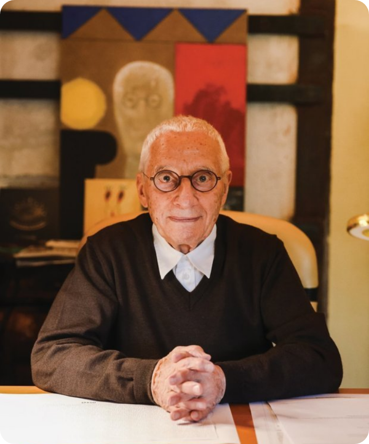
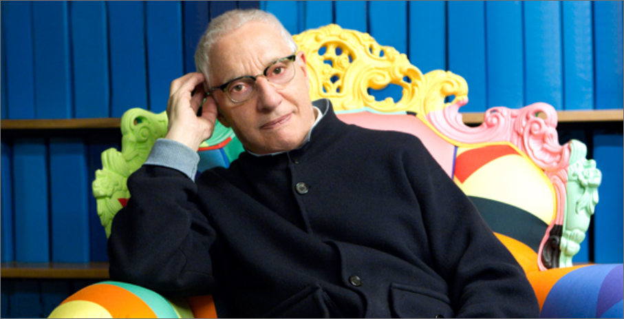
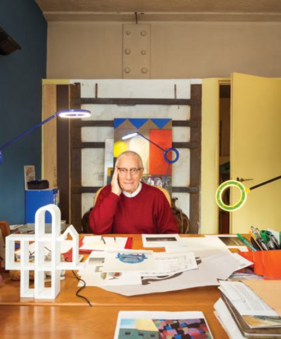

Alessandro Mendini
INTRODUCE
DESIGN
ARCHITECTURE
INTERVIEW
INTERVIEW

“좋은 디자인이란 시와 같고, 감성을 주고,
생각하게 하는 것이고, 사람들에게 미소와
로맨스를 건네는 것이다”

Q. 그가 외치던 리디자인(Redesign)에 대한 생각,
그 리디자인의 걸작이라 불리는 1978년
작 프루스트 체어(Proust Chair)에 관하여
“모든 것이 사람에서 비롯되어요. ‘인간’이라는 단어죠. 1976년 가구 브랜 드 까시나(Cassina)와
함께 프랑스의 작가 마르셀 프루스트(Marcel Proust)를 주제로 패브릭 프로젝트를 시작했어요. 프
루스트의 실제 삶과 그의 작품 <잃어버 린 시간을 찾아서>가 일치하는 것이 흥미롭더군요. 희로애락
과 생로병사 등 인간 군상이 담겨 있어요. 프루스트 체어는 그를 오마주한 것이죠.”
“제가 무언가 새로운 것을 해야할 필요가 있을까요? ‘오직 나만이 할 수 있는거야 !’라고 꺼내놓는 것
이 무슨 의미가 있을까요? 오히려 기존의 것에서 비롯된 반전, 변화, 다른 생각이나 관점을 얘기하고
싶어요. 거기서 각자 다르게 느끼고 웃고 따분해하기도 하죠. 우린 모두 같지만 다른 인간이니까요.”

“내가 지금까지 해 온 디자인 작업,디 자인
전개 방향이 지금 세대와는 너무 다 르죠. 나
는 여전히 연필과 종이를 사용하 고 수작업으
로 제작합니다” “나는 (진작 멸종됐어야하
는데 아직 살아있는) ‘공 룡’이죠. 그러나 공
룡이 살아있다는 건 아 직 사람들이 시적 감
성, 여유, 돈을 넘어 선 다른 가치를 추구하고
자 하는 마음이 있다는 겁니다”